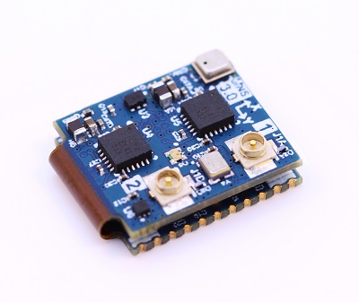
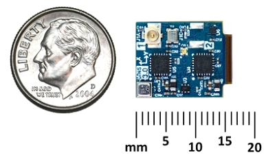

Software Release 1.8.7 - 14 July 2022
Overview¶
The µINS GPS aided Inertial Navigation System, µAHRS Attitude Heading Reference System, and the µIMU Inertial Measurement Unit monitor many different types of measurements including rotation, acceleration, GPS position, magnetic flux density, pressure and velocity. The Inertial Sense SDK provides a software interface to allow communication with the device including setting configuration options, retrieving specific data, and listening for data broadcasts.
μIMU, μAHRS, and μINS¶

The μIMU™ is a miniature calibrated sensor module consisting of an Inertial Measurement Unit (IMU), magnetometer, barometer, and L1 GPS (GNSS) receiver. Data out includes angular rate, linear acceleration, magnetic field, barometric altitude, and GPS WGS84 geo-position. All systems include a comprehensive sensor calibration for bias, scale-factor, and cross-axis alignment, minimizing manufacturing variation and maximizing system performance.
The μAHRS™ is an Attitude Heading Reference System (AHRS) that includes all functionality of the μIMU™ and fuses IMU and magnetometer data to estimate roll, pitch, and heading.
The μINS™ is a GPS (GNSS) aided inertial navigation system (GPS-INS) module that includes all functionality of the μIMU™ and provides orientation, velocity, and position. Sensor data from MEMs gyros, accelerometers, magnetometers, barometric pressure, and GPS/GNSS is fused to provide optimal measurement estimation.
The patented package is smaller than 3 stacked dimes and fits into most industrial and commercial application designs.
Features¶
- Up to 1KHz IMU Update Rate
- Attitude (Roll, Pitch, Yaw, Quaternions, DCM), Velocity, and Position (LLA, ECEF, NED)UTC Time Synchronized
- Dual Redundant IMUs Calibrated for Bias, Scale Factor, and Cross-Axis Alignment
- Coning & Sculling Integrals (Δ theta, Δ velocity)
- Barometric Pressure and Humidity
- u-Blox L1 GPS (GNSS) Receiver
- -40°C to 85°C Temperature Compensation
- Configurable Binary and NMEA ASCII Protocol
- Strobe In/Out Data Sync (Camera Shutter Event)
- Fast Integration using SDK and Example Software
- Data Logging (SDK and Application Software)
- Miniature Surface Mount Package:
- 16.5 x 12.6 x 4.6 mm, 1.3 grams
Interfaces¶
| Module | EVB 1.x | EVB 2.x | Rugged 1.0 | |
|---|---|---|---|---|
| USB | Yes | Yes | Yes | Yes |
| TTL/UART | Yes | Yes | Yes | Yes |
| RS232/RS422/RS485 | No | Yes | Yes | Yes |
| CAN | Yes | Yes | Yes | Yes |
| SPI | Yes | Yes | Yes | No |
| Integrated XBee Radio (RTK) | No | No | Yes (Option) | No |
| WiFi/BTLE | No | No | Yes | No |
| GPS Antenna Ports (Dual=Compassing) | Dual (Option) | Single | Dual (Option) | Dual (Option) |
Applications¶
- Drone Navigation
- Unmanned Vehicle Payloads
- Stabilized Platforms
- Antenna and Camera Pointing
- First Responder and Personnel Tracking
- Pedestrian and Auto Outdoor / Indoor Navigation
- Health, Fitness, and Sport Monitors
- Hand-held Devices
- Robotics and Ground Vehicles
- Maritime

Inertial Sense, Inc.
3000 S Sierra Vista Way Suite 2, Provo, UT 84606 USA
Phone 801-610-6771
Email support@inertialsense.com
Website: InertialSense.com
© 2014-2022 Inertial Sense
Inertial Sense®, Inertial Sense logo and combinations thereof are registered trademarks or trademarks of Inertial Sense, Inc. Other terms and product names may be trademarks of others.
DISCLAIMER: The information in this document is provided in connection with Inertial Sense products. No license, express or implied, by estoppel or otherwise, to any intellectual property right is granted by this document or in connection with the sale of Inertial Sense products. EXCEPT AS SET FORTH IN THE INERTIAL SENSE TERMS AND CONDITIONS OF SALES LOCATED ON THE INERTIAL SENSE WEBSITE, INERTIAL SENSE ASSUMES NO LIABILITY WHATSOEVER AND DISCLAIMS ANY EXPRESS, IMPLIED OR STATUTORY WARRANTY RELATING TO ITS PRODUCTS INCLUDING, BUT NOT LIMITED TO, THE IMPLIED WARRANTY OF MERCHANTABILITY, FITNESS FOR A PARTICULAR PURPOSE, OR NON-INFRINGEMENT. IN NO EVENT SHALL INERTIAL SENSE BE LIABLE FOR ANY DIRECT, INDIRECT, CONSEQUENTIAL, PUNITIVE, SPECIAL OR INCIDENTAL DAMAGES (INCLUDING, WITHOUT LIMITATION, DAMAGES FOR LOSS AND PROFITS, BUSINESS INTERRUPTION, OR LOSS OF INFORMATION) ARISING OUT OF THE USE OR INABILITY TO USE THIS DOCUMENT, EVEN IF INERTIAL SENSE HAS BEEN ADVISED OF THE POSSIBILITY OF SUCH DAMAGES. Inertial Sense makes no representations or warranties with respect to the accuracy or completeness of the contents of this document and reserves the right to make changes to specifications and products descriptions at any time without notice. Inertial Sense does not make any commitment to update the information contained herein. Unless specifically provided otherwise, Inertial Sense products are not suitable for, and shall not be used in, automotive applications. Inertial Sense products are not intended, authorized, or warranted for use as components in applications intended to support or sustain life. SAFETY-CRITICAL, MILITARY, AND AUTOMOTIVE APPLICATIONS DISCLAIMER: Inertial Sense products are not designed for and will not be used in connection with any applications where the failure of such products would reasonably be expected to result in significant personal injury or death (“Safety-Critical Applications”) without an Inertial Sense officer's specific written consent. Safety-Critical Applications include, without limitation, life support devices and systems, equipment or systems for the operation of nuclear facilities and weapons systems. Inertial Sense products are not designed nor intended for use in military or aerospace applications or environments unless specifically designated by Inertial Sense as military-grade.